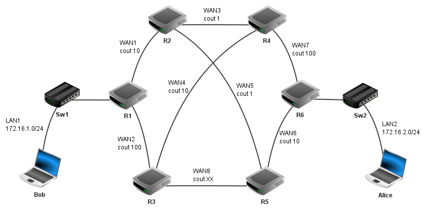

L’exercice porte sur les bases de données et les types construits de données.
On pourra utiliser les mots clés SQL suivants : AND, FROM, INSERT, INTO, JOIN, OR,
ON, SELECT, SET, UPDATE, VALUES, WHERE.
On étudie une base de données permettant la gestion de l’organisation d’un festival
de musique de jazz, dont voici le schéma relationnel comportant trois relations :
la relation groupes (idgrp, nom, style, nb_pers)
la relation (idmus, nom, prenom, instru, #idgrp)
la relation concerts (idconc, scene, heure_debut, heure_fin, #idgrp)
Dans ce schéma relationnel :
les clés primaires sont soulignées ;
les clés étrangères sont précédées d’un #.
Ainsi concerts.idgrp est une clé étrangère faisant référence à groupes.idgrp.
Voici un extrait des tables groupes, musiciens et concerts :
musiciens
idmus
nom
prenom
instru
idgrp
12
'Parker'
'Charlie'
'trompette'
96
13
'Parker'
'Charlie'
'trombone'
25
58
'Dufler'
'Candy'
'saxophone'
96
97
'Miles'
'Davis'
'saxophone'
87
groupes
idgrp
nom
style
nb_pers
12
'Weather Report'
'Latin Jazz'
5
25
'Breckers Brothers'
'Swing Jazz'
4
87
'Return to Forever'
'Latin Jazz'
8
96
'The Jazz Messenger'
'Free Jazz'
3
concerts
idconc
scene
heure_debut
heure_fin
idgrp
10
1
'20h00'
'20h45'
12
24
2
'20h00'
'20h45'
15
36
1
'21h00'
'22h00'
96
45
3
'18h00'
'18h30'
87
Figure 1 : Extrait des tables groupes, musiciens et concerts.
Citer les attributs de la table groupes.
Justifier que l’attribut nom de la table musiciens ne peut pas être une clé primaire.
En s'appuyant uniquement sur l’extrait des tables fourni dans la figure 1 écrire ce que renvoie la requête :
SELECT nom
FROM groupes
WHERE style = 'Latin Jazz';
Le concert dont l’idconc est 36 finira à 22h30 au lieu de 22h00. Recopier sur la copie et compléter la requête SQL ci-dessous permettant de mettre à jour la relation concerts pour modifier l’horaire de fin de ce concert.
UPDATE concerts
SET ...
WHERE ... ;
Donner une requête SQL permettant de récupérer le nom de tous les groupes qui
jouent sur la scène 1.
Fournir une requête SQL permettant d’ajouter dans la relation groupes le groupe 'Smooth Jazz Fourplay', de style ‘Free Jazz’, composé de 4 membres. Ce groupe aura un idgrp de 15.
Les données sont ensuite récupérées pour être analysées par la société qui produit
les festivals de musique. Pour ce faire, elle utilise la programmation en Python afin
d’effectuer certaines opérations plus complexes.
Elle stocke les données relatives aux musiciens sous forme d’un tableau de
dictionnaires dans laquelle a été ajouté le nombre de concerts effectués par chaque
musicien :
Écrire la fonction recherche_nom ayant pour unique paramètre un tableau de dictionnaires (comme musiciens présenté précédemment) renvoyant un tableau
contenant le nom de tous les musiciens ayant participé à au moins 4 concerts.
Exercice 2 (3 points)
L’exercice porte sur l’architecture matérielle, les réseaux et les systèmes
d’exploitation.
Nous allons étudier les communications entre Bob et Alice. Ils communiquent au
travers du réseau ci-dessous dont le protocole de routage est le protocole OSPF qui
minimise le cout des communications :

Figure 1 : Plan du réseau de communication entre Alice et Bob.
LAN : réseau local ; WAN : réseau étendu ; R : routeur ; Sw : Switch
Une adresse IPv4 est composée de quatre octets soit 32 bits. Une adresse de sous-
réseau avec la notation /n signifie que les n premiers bits de l’adresse correspondent
à la partie « réseau » et les suivants à la partie « machine ».
L’adresse dont tous les bits de la partie « machine » sont à 0 est appelée adresse du
réseau.
L’adresse dont tous les bits de la partie « machine » sont à 1 est appelée adresse de
diffusion.
Ces adresses sont réservées et ne peuvent pas être attribuées à des machines.
Le choix des routes empruntées par les paquets IP est uniquement basé sur le
protocole OSPF. On prendra comme débit maximal de référence 10 000 Mbit/s.
Le cout est alors calculé de la façon suivante :
\[\textrm{coût}=\frac{\textrm{débit maximal de référence}}{\textrm{débit du réseau concerné}}\]
La configuration IP partielle ci-dessous a été affichée sur l’un des ordinateurs :
IP hôte : 172.16.2.3
IP passerelle : 172.16.2.253
Indiquer en justifiant si cette configuration appartient à l’ordinateur de Bob ou d’Alice.
Le réseau WAN8 a un débit de 1 000 Mbit/s. Calculer le cout correspondant.
On donne les tables de routage des routeurs R1 à R5, dans lesquelles Pass. désigne
la passerelle (qui correspond au routeur suivant) :
Routeur R1
Dest.
Pass.
Coût
LAN1
-
-
LAN2
R2
21
WAN1
-
-
WAN2
-
-
WAN3
R2
10
WAN4
R2
11
WAN5
R2
10
WAN6
R2
11
WAN7
R2
11
WAN8
R2
11
Routeur R2
Dest.
Pass.
Coût
LAN1
R1
10
LAN2
R5
11
WAN1
-
-
WAN2
R1
10
WAN3
-
-
WAN4
R4
1
WAN5
-
-
WAN6
R5
1
WAN7
R4
1
WAN8
R5
1
Routeur R3
Dest.
Pass.
Coût
LAN1
R4
21
LAN2
R5
20
WAN1
R4
11
WAN2
-
-
WAN3
R4
10
WAN4
-
-
WAN5
R5
10
WAN6
R5
10
WAN7
R4
10
WAN8
-
-
Routeur R4
Dest.
Pass.
Coût
LAN1
R2
11
LAN2
R2
12
WAN1
R2
1
WAN2
R3
10
WAN3
-
-
WAN4
-
-
WAN5
R2
1
WAN6
R2
2
WAN7
-
-
WAN8
R2
2
Routeur R5
Dest.
Pass.
Coût
LAN1
R2
11
LAN2
R6
10
WAN1
R2
1
WAN2
R3
10
WAN3
R2
1
WAN4
R2
2
WAN5
-
-
WAN6
-
-
WAN7
R2
2
WAN8
-
-
Écrire sur votre copie la table de routage du routeur R6.
Bob envoie un message à Alice.
Énumérer dans l’ordre tous les routeurs par lesquels transitera ce message.
Un routeur tombe en panne, le nouveau cout pour la route entre Bob et Alice est de
111. Déterminer le nom du routeur en panne.
Exercice 3 (6 points)
L’exercice porte sur les arbres binaires de recherche et la programmation objet.
Dans un entrepôt de e-commerce, un robot mobile autonome exécute successivement
les tâches qu’il reçoit tout au long de la journée.
La mémorisation et la gestion de ces tâches sont assurées par une structure de
données.
Dans l'hypothèse où les tâches devraient être extraites de cette structure (pour être exécutées) dans le même ordre qu’elles ont été mémorisées, préciser si ce
fonctionnement traduit le comportement d’une file ou d’une pile. Justifier.
En réalité, selon l'urgence des tâches à effectuer, on associe à chacune d’elles, lors de la mémorisation, un indice de priorité (nombre entier) distinct : il n'y a pas de valeur en double. Plus cet indice est faible, plus la tâche doit être traitée prioritairement.
La structure de données retenue est assimilée à un arbre binaire de recherche (ABR)
dans lequel chaque nœud correspond à une tâche caractérisée par son indice de
priorité.
Rappel : Dans un arbre binaire de recherche, chaque nœud est caractérisé par une
valeur (ici l'indice de priorité), telle que chaque nœud du sous-arbre gauche a une
valeur strictement inférieure à celle du nœud considéré, et que chaque nœud du sous-
arbre droit possède une valeur strictement supérieure à celle-ci.
Cette structure de données présente l'avantage de mettre efficacement en œuvre
l'insertion ou la suppression de nœuds, ainsi que la recherche d'une valeur.
Figure 1 : Exemple d’un arbre binaire
En utilisant le vocabulaire couramment utilisé pour les arbres, préciser le terme qui correspond :
au nombre de tâches restant à effectuer, c’est-à-dire le nombre total de nœuds de l’arbre ;
au nœud représentant la tâche restant à effectuer la plus ancienne ;
au nœud représentant la dernière tâche mémorisée (la plus récente).
Lorsque le robot reçoit une nouvelle tâche, on déclare un nouvel objet, instance de
la classe Noeud, puis on l’insère dans l’arbre binaire de recherche (instance de la
classe ABR) du robot. Ces 2 classes sont définies comme suit :
class Noeud:
def __init__(self, tache, indice):
self.tache = tache #ce que doit accomplir le robot
self.indice = indice #indice de priorité (int)
self.gauche = ABR() #sous-arbre gauche vide (ABR)
self.droite = ABR() #sous-arbre droit vide (ABR)
class ABR:
#arbre binaire de recherche initialement vide
def __init__(self):
self.racine = None #arbre vide
#Remarque : si l'arbre n'est pas vide, racine est
#une instance de la classe Noeud
def est_vide(self):
"""renvoie True si l'arbre autoréférencé est vide,
False sinon"""
return self.racine == None
def insere(self, nouveau_noeud):
"""insere un nouveau noeud, instance de la classe
Noeud, dans l’ABR"""
if self.est_vide():
self.racine = nouveau_noeud
elif self.racine.indice ...... nouveau_noeud.indice
self.racine.gauche.insere(nouveau_noeud)
else:
self.racine.droite.insere(nouveau_noeud)
Donner les noms des attributs de la classe Noeud.
Expliquer en quoi la méthode insere est dite récursive et justifier rapidement qu’elle se termine.
Indiquer le symbole de comparaison manquant dans le test à la ligne 26 de la
méthode insere pour que l’arbre binaire de recherche réponde bien à la
définition de l’encadré « Rappel » précédente.
On considère le robot dont la liste des tâches est représentée par l’arbre de la
figure 1. Ce robot reçoit, successivement et dans l’ordre, des tâches d’indice de
priorité 11, 5, 16 et 7, sans avoir accompli la moindre tâche entretemps.
Recopier et compléter la figure 1 après l’insertion de ces nouvelles tâches.
Avant d’insérer une nouvelle tâche dans l’arbre binaire de recherche, il faut s’assurer que son indice de priorité n’est pas déjà présent.
Écrire une méthode est_present de la classe ABR qui répond à la description :
def est_present(self, indice_recherche) :
"""renvoie True si l’indice de priorité indice_recherche
(int) passé en paramètre est déjà l’indice d’un nœud
de l’arbre, False sinon"""
Comme le robot doit toujours traiter la tâche dont l’indice de priorité est leplus petit, on envisage un parcours infixe de l’arbre binaire de recherche.
Donner l’ordre des indices de priorité obtenus à l’aide d’un parcours infixe de l’arbre binaire de recherche de la figure 1.
Expliquer comment exploiter ce parcours pour déterminer la tâche prioritaire.
Afin de ne pas parcourir tout l'arbre, il est plus efficace de rechercher la tâche du nœud situé le plus à gauche de l'arbre binaire de recherche : il correspond à la tâche prioritaire.
Recopier et compléter la méthode récursive tache_prioritaire de la classe ABR:Afin de ne pas parcourir tout l'arbre, il est plus efficace de rechercher la tâche du
nœud situé le plus à gauche de l'arbre binaire de recherche : il correspond à la tâche
prioritaire.
Recopier et compléter la méthode récursive tache_prioritaire de la classe ABR:
def tache_prioritaire(self):
"""renvoie la tache du noeud situé le plus
à gauche de l'ABR supposé non vide"""
if self.racine...........est_vide(): #pas de nœud plus à gauche
return self.racine..........
else:
return self.racine.gauche..........()
Une fois la tâche prioritaire effectuée, il est nécessaire de supprimer le nœud
correspondant pour que le robot passe à la tâche suivante :
Si le nœud correspondant à la tâche prioritaire est une feuille, alors il est simplement supprimé de l'arbre (cette feuille devient un arbre vide)
Si le nœud correspondant à la tâche prioritaire a un sous-arbre droit non vide, alors ce sous-arbre droit remplace le nœud prioritaire qui est alors écrasé, même s'il s'agit de la racine.
Dessiner alors, pour chaque étape, l'arbre binaire de recherche (seuls les indices de
priorités seront représentés) obtenu pour un robot, initialement sans tâche, et qui a,
successivement dans l'ordre :
étape 1 : reçu une tâche d'indice de priorité 14 à accomplir
étape 2 : reçu une tâche d'indice de priorité 11 à accomplir
étape 3 : reçu une tâche d'indice de priorité 8 à accomplir
étape 4 : accompli sa tâche prioritaire
étape 5 : reçu une tâche d'indice de priorité 12 à accomplir
étape 6 : accompli sa tâche prioritaire
étape 7 : accompli sa tâche prioritaire
étape 8 : reçu une tâche d'indice de priorité 15 à accomplir
NSI - Bac 2023 - Sujet 0A - Corrigé
Corrigé :
Les attributs de la table groupes sont : idgrp, nom, style, nb_pers.
Le même nom peut apparaitre plusieurs fois (dans le cas d'homonymes), ce qui est interdit pour une clé primaire.
Cette requête renvoie : 'Weather Report' et 'Return to Forever'.
UPDATE concerts
SET heure_fin = ‘22h30’
WHERE idconc = 36
SELECT nom
FROM groupes
JOIN concerts ON concerts.idgrp = groupes.idgrp
WHERE scene = 1
INSERT INTO groupes
VALUES
(15, 'Smooth Jazz Fourplay', ‘Free Jazz’, 4)
def recherche_nom(tab):
t = []
for d in tab:
if d['nb_concerts'] >= 4 and d['nom'] not in t
t.append(d['nom'])
return t
Nous avons un hôte d’adresse IP 172.16.2.3/24 qui appartient au réseau d’adresse réseau 172.16.2.0. C’est l’ordinateur d’Alice qui appartient à ce réseau (voir schéma).
\(\textrm{cout} = \frac{10000}{1000} = 10\)
Routeur R6
Dest.
Pass.
Coût
LAN1
R5
21
LAN2
-
-
WAN1
R5
11
WAN2
R5
20
WAN3
R5
11
WAN4
R5
12
WAN5
R5
10
WAN6
-
-
WAN7
-
-
WAN8
R5
10
Bob R1 → R2 → R5 → R6 → Alice
Le nouveau chemin est R1 → R2 → R4 → R6. On évite le routeur R5, c’est donc le
routeur 5 qui est en panne.
Il s’agit d’une structure FIFO, c'est-à-dire une file
il s’agit de la taille d’un arbre
il s’agit de la racine de l’arbre
il s’agit de la feuille d’un arbre
attributs de la classe Noeud : tache, indice, gauche et droite
La méthode insere est dite récursive, car elle s’appelle elle-même. Danscette méthode récursive, on trouve bien le traitement du cas de base, ce qui
permet d’affirmer que cette méthode se termine.
il s’agit du signe > (strictement supérieur)
def est_present(self, indice_recherche) :
"""renvoie True si l’indice de priorité indice_recherche
(int) passé en paramètre est déjà l’indice d’un nœud
de l’arbre, False sinon"""
if self.est_vide():
return False
if self.racine.indice == indice_recherche:
return True
if self.racine.indice > indice_recherche :
return self.racine.gauche.est_present(indice_recherche)
else :
return self.racine.droite.est_present(indice_recherche)
parcours infixe : 6 - 8 - 10 - 12 - 13 - 14
Le parcours infixe permet d’obtenir les valeurs des nœuds d’un arbre binaire de recherche dans un ordre croissant. Le parcours infixe va donc permettre
d’obtenir les tâches à accomplir dans l’ordre des priorités
def tache_prioritaire(self):
"""renvoie la tache du noeud situé le plus
à gauche de l'ABR supposé non vide"""
if self.racine.gauche.est_vide(): #pas de nœud plus à gauche
return self.racine.tache
else:
return self.racine.gauche.tache_prioritaire()